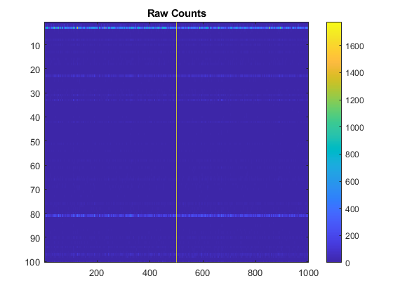
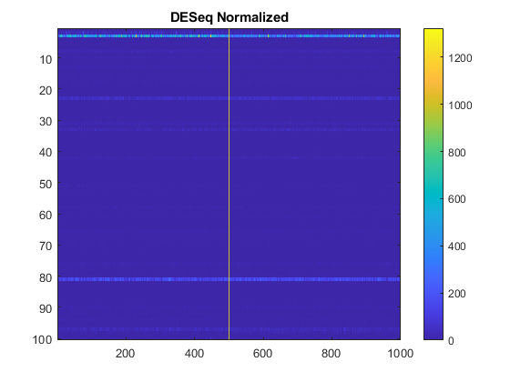
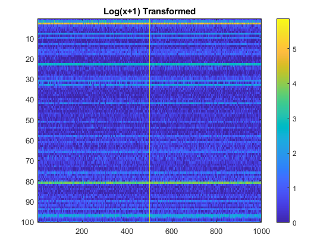
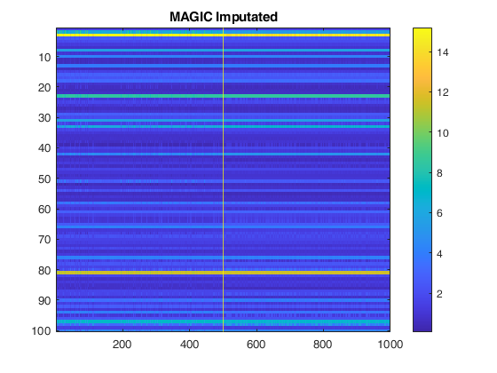
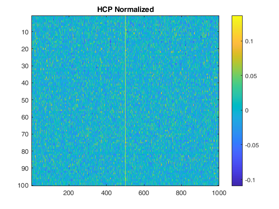
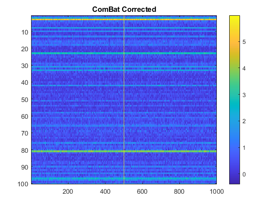
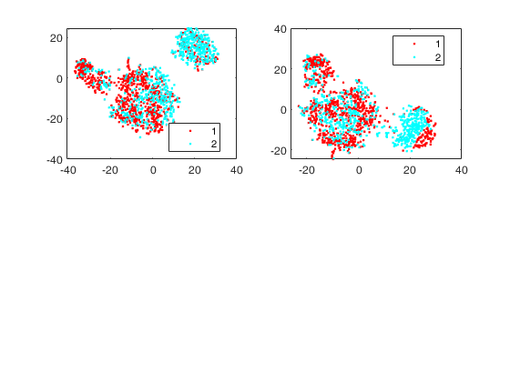

cdgea;
[X,genelistx]=sc_readfile('example_data/GSM3204304_P_P_Expr.csv');
[Y,genelisty]=sc_readfile('example_data/GSM3204305_P_N_Expr.csv');
[X,genelistx]=sc_selectg(X,genelistx,5,3);
[Y,genelisty]=sc_selectg(Y,genelisty,5,3);
[genelist,i,j]=intersect(genelistx,genelisty,'stable');
X=X(i,:);
Y=Y(j,:);
clearvars -except X Y genelist
figure; imagesc([X(1:100,1:500) Y(1:100,1:500)]); title('Raw Counts'); colorbar; xline(500,'y-');
[Xs]=sc_norm(X,'type','deseq');
[Ys]=sc_norm(Y,'type','deseq');
figure; imagesc([Xs(1:100,1:500) Ys(1:100,1:500)]); title('DESeq Normalized'); colorbar; xline(500,'y-');
[X]=sc_norm(X,'type','libsize');
[Y]=sc_norm(Y,'type','libsize');
figure; imagesc([X(1:100,1:500) Y(1:100,1:500)]); title('Library Size Normalized'); colorbar; xline(500,'y-');
X=log(X+1);
Y=log(Y+1);
figure; imagesc([X(1:100,1:500) Y(1:100,1:500)]); title('Log(x+1) Transformed'); colorbar; xline(500,'y-');
Xo=run.MAGIC(X);
Yo=run.MAGIC(Y);
figure; imagesc([Xo(1:100,1:500) Yo(1:100,1:500)]); title('MAGIC Imputated'); colorbar; xline(500,'y-');
[Xm,Ym]=run.HCP(X,Y);
figure; imagesc([Xm(1:100,1:500) Ym(1:100,1:500)]); title('HCP Normalized'); colorbar; xline(500,'y-');
[Xn,Yn]=run.ComBat(X,Y);
figure; imagesc([Xn(1:100,1:500) Yn(1:100,1:500)]); title('ComBat Corrected'); colorbar; xline(500,'y-');
batchidx=[1*ones(size(X,2),1); 2*ones(size(Y,2),1)];
figure;
subplot(2,2,1)
[s]=sc_tsne([X Y],2,false,false,false);
gscatter(s(:,1),s(:,2),batchidx,'','',5);
subplot(2,2,2)
[s]=sc_tsne([Xn Yn],2,false,false,false);
gscatter(s(:,1),s(:,2),batchidx,'','',5);
Reading example_data/GSM3204304_P_P_Expr.csv ...... done.
Reading example_data/GSM3204305_P_N_Expr.csv ...... done.
doing PCA
computing kernel
Computing alpha decay kernel:
Number of samples = 835
First iteration: k = 300
Number of samples below the threshold from 1st iter: 817
Using radius based search for the rest
Symmetrize affinities
Done computing kernel
imputing using optimal t
t = 1
t = 2
t = 3
t = 4
t = 5
t = 6
t = 7
t = 8
t = 9
optimal t = 9
done.
doing PCA
computing kernel
Computing alpha decay kernel:
Number of samples = 644
First iteration: k = 300
Number of samples below the threshold from 1st iter: 635
Using radius based search for the rest
Symmetrize affinities
Done computing kernel
imputing using optimal t
t = 1
t = 2
t = 3
t = 4
t = 5
t = 6
t = 7
t = 8
t = 9
t = 10
optimal t = 10
done.
[combat] Found 2 batches
[combat] Adjusting for 0 covariate(s) of covariate level(s)
[combat] Standardizing Data across features
[combat] Fitting L/S model and finding priors
[combat] Finding parametric adjustments
[combat] Adjusting the Data
      